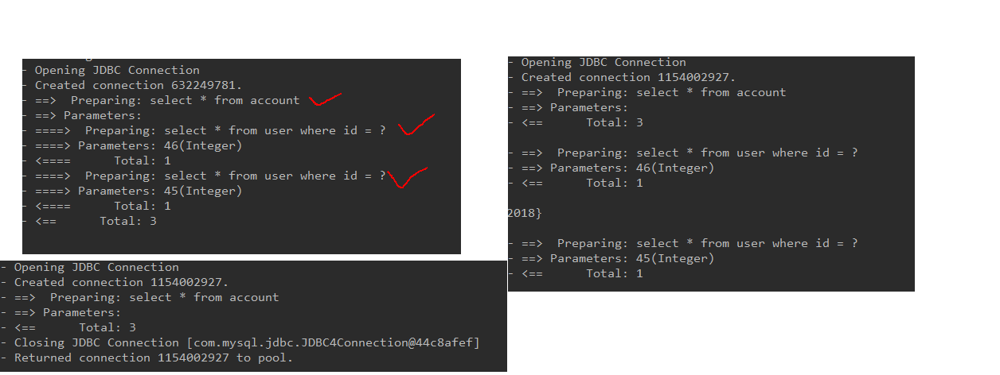
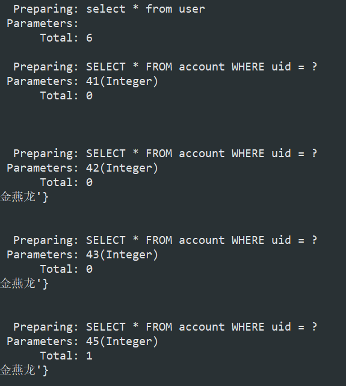

mybatis的缓存、注解开发
延迟加载和立即加载的概念
问题：在一对多中，当我们有一个用户，它有100个账户。
1 | 在查询用户的时候，要不要把关联的账户查出来？ |
mybatis一对一实现延迟加载
- 在IAccountDao.xml配置association
1 | <resultMap id="accountUserMap" type="account"> |
- 在SqlMapConfig.xml配置缓存参数
1 | <!--配置缓冲参数--> |
延迟加载之前，数据是一股脑的全部查出来，当设置懒加载之后，如果调用了对应的方法，这时才会查询出来。

mybatis一对多实现延迟加载
一对多使用collection关键字
多对一使用association关键字
1 | <!--配置user对象中accounts集合的映射--> |
1 | @Test |
未注释之前，每次都查询了相关联的账户信息

1 |
|
注释之后，只查询了用户信息，并没有查询相关联的账户信息，实现了当用户只想查询用户时，不加载相关联的账户信息，而当用户想查询账户时，把相关联的账户和用户信息一起查询出来。
缓存的概念
存在于内存中的临时数据。
减少和数据库的交互次数，提高执行效率。
适用于缓存：
经常查询并且不经常改变的。
数据的正确与否对最终结果影响不大的。
不适用与缓存：
经常改变的数据
数据的正确与否对最终结果影响很大的。
例如：商品的库存，银行的汇率，股市的牌价。
mybatis中的一级缓存
他指定是Mybatis中SQLSession对象的缓存。
当我们执行查询之后，查询的结果会同时存入到SQLSession为我们提供一块区域中。该区域的结构是一个Map。当我们再次查询同样的数据，mybatis会先去sqlsession中查询是否有，有的话直接拿出来用。
当SqlSession对象消失时，Mybatis的一级缓存也就消失了。
触发清空一级缓存的情况
- 编写相应的测试类，updateUser方法
1 | <select id="updateUser" parameterType="user"> |
- 将User中的toString注释掉
- 测试
1 | /** |
由结果可以看出，由于有缓存的存在，两次查询的结果都封装到了同一对象，也就是说程序只查询了一次数据库，导致两个对象指向同一内存空间，所以user1=user2
一级缓存是SqlSession范围的缓存，当调用SqlSession的修改，添加，删除，commit()，close()等方法时，就会清空一级缓存
mybatis的二级缓存
它指的是Mybatis中SqlSessionFactory对象的缓存。由同一个SqlSessionFactory对象创建的SqlSession共享其缓存。
两级缓存的使用步骤：
让Mybais框架支持二级缓存(在SqlMapConfig.xml中配置)
让当前的映射文件支持二级缓存(在IUserDao.xml中配置)
让当前的操作支持二级缓存(在select标签中配置)
test
此时我们发现，数据库只查询了一次，并且他们的对象并不相同，就证明他并不是一级缓存。因为二级缓存中存放的内容是数据，而不是数据，当我们需要再次使用同一数据时，会把数据赋给新的用户的对象中去，所以此时的两个对象并不是同一个
mybatis注解开发的环境搭建
在同一Dao下注解与接口的xml不能共存
怎么解决呢？
1 | /** |
1 | /** |
mybatis注解建立实体类和数据库中列的对应关系
1 | /** |
mybatis注解开发一对一的查询配置
1 | //多对一(Mybatis中称之为一对一)的映射：一个账户只能属于一个账户 |
1 | public interface IAccountDao { |
mybatis注解开发一对多的查询配置
1 | //一对多关系映射：一个用户对应多个账户 |
1 | @Select("select * from account where uid = #{uid}") |
1 | /** |
mybatis注解开发使用二级缓存
一级缓存是自动开启的
无法设置关闭，但是sqlSession在执行更新，删除，添加，提交，关闭时会清除一级缓存
1 | /** |
分别打开两次session，肯定会分别创建两个连接进行sql查询，并且返回的不是同一对象
进行二级缓存配置
sqlmapconfig.xml1
2
3
4<!--配置开启二级缓存-->
<settings>
<setting name="cacheEnabled" value="true"/>
</settings>
IUserDao在头部添加@CacheNamespace
1 | //@CacheNamespace(blocking = true) |
test
此时添加了二级缓存，把第一次查询的结果封装成数据保存在某个地方，不管是不是同一个sqlSession对象，当再次执行相同操作时，会把数据提取出来赋给新的对象，所以这两个对象不相等，但是只创建了一次连接